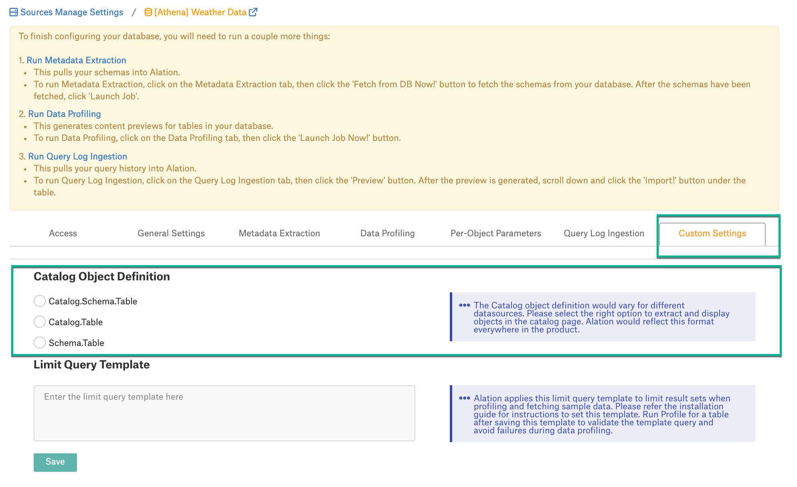
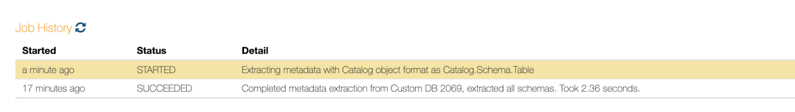
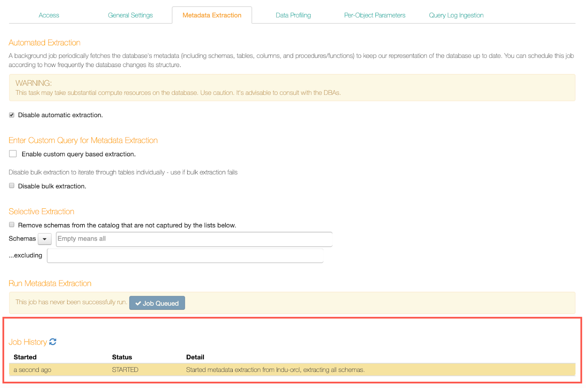

Metadata Extraction From Custom DB¶
Custom DB supports regular MDE (both full and selective) and query-based MDE.
Regular MDE¶
Regular MDE can be used if you do not want to customize extraction from this source. Alation will try to fetch all the metadata it can access with the service account you provided using the driver selected in General Settings.
Before performing regular MDE, consider setting the Catalog Object Definition for your data source on the Custom Settings tab of the Settings page (available from version 2020.3). Catalog Object Definition is an optional setting and is not required to be configured if the driver-based methods correctly determine the object definition for your data source.
Note
The Catalog Object Definition setting only applies to regular MDE and does not impact custom query-based type of extraction. Query-based MDE depends only on the custom queries.
If the catalog object definition determined based on the driver methods is not correct for your data source, then you can explicitly choose an option on the Settings > Custom Settings tab.
Set the Catalog Object Definition¶
Available from 2020.3
Select a Catalog Object Definition that applies to your database type to ensure that Alation does not depend on driver-specific methods to determine if the connected data source follows the single part or multipart database object definition:
To select an option, click the appropriate radio button under Custom Settings > Catalog Object Definition. The selected option will be used to represent objects in the Catalog during the next metadata extraction:
Catalog.Schema.Table: choose this format if your data source uses such object hierarchy as Database/Catalog > Schema > Tables
Schema.Table: choose this format if your data source uses such hierarchy as Schema > Tables
Catalog.Table: choose this format if the hierarchy is Catalog > Tables. This format is not widely used and needed only if your system tables store the catalog information in the TABLE_CAT field and the TABLE_SCHEM field is empty.
Important
When set, the Catalog Object Definition cannot be cleared. The data source is expected to fall into one of the three categories, and the right format has to be selected.
Test the Selected Format¶
After selecting an option, check if the selected format is correct for the data source. Go to the Metadata Extraction tab and under Selective Extraction, click the Refresh button. You should see the list of schemas in the expected format in the Schemas list.
The Catalog Object Definition-related logs are captured in the alation-info.log during MDE. In the UI, the selected format is captured in the Job History table when MDE is progress.
Change the Catalog Object Definition After MDE¶
You can set or change the Catalog Object Definition after performing MDE; however, this may have implications for the existing catalog objects, such as articles and tags that reference objects extracted with the previously set Object Definition. Re-running MDE with the new Object Definition also has an impact on query history and lineage generated before it was rerun as the objects extracted with different Catalog Object Definitions are considered as different objects by Alation.
To change the Catalog Object Definition,
Open Settings > Custom Settings and select an option under the Catalog Object Definition section.
Go to the Metadata Extraction tab.
Under Selective Extraction, select the option Remove schemas from the catalog not captured by the lists below and rerun MDE to extract the metadata with the newly selected Object Definition. All objects extracted with the previous format will be cleared from the catalog.
Update any existing tags or articles that reference the objects in the previous format with references to the objects with the new format. Alation considers the objects extracted with different Catalog Object Definitions as different objects and does not update the references automatically.
Perform MDE¶
To perform regular MDE,
On the Metadata Extraction tab, click Fetch from DB Now. Alation will fetch schemas from your data source:
{kind=link}
You can now extract the metadata for all the schemas that Alation fetched (full extraction) or you can specify the schemas to be extracted from the list of fetched schemas (selective extraction). To perform full extraction, click Launch Job. To perform selective extraction, first select the schemas you want to extract, click Launch Job:
{kind=link}
Your MDE job will be queued. You can monitor the job status in the Job History table at the bottom of the page:
{kind=link}
After MDE is completed, you should be able to see the extracted metadata in your Alation catalog.
Query-Based MDE¶
Starting with release V R5 (5.9.x), Alation supports query-based metadata extraction from Custom DB. This feature allows you to customize metadata extraction from the source down to the level of specific metadata types, such as tables, columns, views, and some other.
To use this feature, you will need to write several custom queries to extract the metadata. Alation expects that these queries conform to a specific structure and use the expected reserved identifiers.
See Guidelines for Creating Custom Queries for MDE.
When you have the queries, you can configure query-based MDE in Alation:
Open the Metadata Extraction tab of your Custom DB source Settings page and under Enter Custom Query for Metadata Extraction, select the checkbox Enable custom query-based extraction. This will reveal input fields for your custom queries:
{kind=link}
You will see the list of metadata types available from extraction. These are:
Schema
Table
Column
View
Primary Key
Foreign Key
Index
Partition
Function
Synonym
The first three, Schema, Table, and Column, are mandatory and pre-selected. You can select other (optional) metadata types to additionally extract them too. As you select the checkboxes, the corresponding input fields will appear on the page.
Add your queries into the corresponding query input boxes.
After entering a query, click Preview under the query field to see a preview of the result set. This will validate the syntax and show errors if the syntax is not as expected by Alation. Refer to Troubleshooting Query-Based MDE for details about potential error messages. If the query is valid, the preview will show two random rows from your database that match the result columns included in the query:
Click Save Queries to store the queries that you have entered or modified.
Note
When you want to remove a saved query or un-select a metadata type, remove the query that you have entered and clear the metadata type checkbox. Click Save Queries to apply the change.
If MDE is performed for the first time, click Fetch from DB Now to fetch the metadata then click Launch Job Now to perform extraction. If MDE is performed previously, the button will be called Relaunch Job:
{kind=link}
{kind=link}
Selective extraction will not be available when you opt for query-based extraction. However, users can perform selective extraction by adding a filter condition to the query.
Example (MySQL):
SELECT null AS `CATALOG`, table_schema AS `SCHEMA`, table_name AS `TABLE`, CASE WHEN table_type = 'BASE TABLE' THEN 'TABLE' ELSE 'VIEW' END AS 'TABLE_TYPE', table_comment AS REMARKS FROM information_schema.tables WHERE table_schema = 'FDA' AND table_name NOT IN ('drug_packaging')
Scheduling MDE¶
After you have successfully performed MDE, you can set this process to run on an automatic schedule. By default, automated MDE is disabled. If you enable it, Alation will schedule a background job to periodically fetch the metadata to keep the catalog representation of your source database up to date. You can schedule this job according to how frequently the database changes its structure.
To schedule MDE,
On the Metadata Extraction tab, on top, find section Automated Extraction and clear the checkbox Disable automatic extraction. This will reveal the controls for scheduling the extraction process:
{kind=link}
Specify a schedule for MDE using the day/time fields. Click a field to open the list of values and select a value for each field. When a schedule is set, Alation will perform MDE automatically at the specified time.
{kind=link}
Disabling Bulk Extraction¶
By default, Disable Bulk Extraction parameter is off as Alation attempts to extract the metadata for the selected schemas in bulk. If the default MDE job fails with the error Error serializing dbobjects: Error iterating over ResultSet, you can rerun it with the Disabling Bulk Extraction option enabled.
If Disabling Bulk Extraction is on, Alation tries to fetch metadata for each table individually relying on the JDBC driver methods to return metadata for individual objects. This alternative may be characterized by slower performance but is more failure-resistant.
Note
The Error serializing dbobjects: Error iterating over the ResultSet can be caused by the driver API not functioning as expected.
{kind=link}